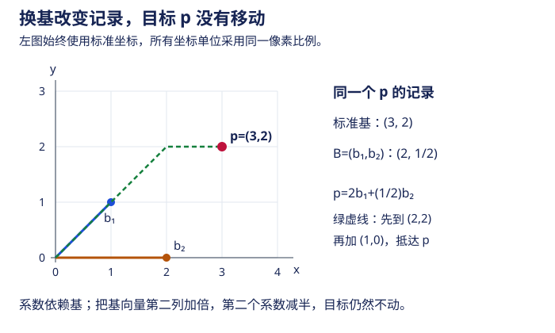

本页目录
高代 IV · 线性空间与线性映射
本页是高等代数的观念顶点：把"向量"公理化（不再只是数组——多项式、函数、矩阵都是向量），把"矩阵"重新定义为线性映射在选定基下的照片。想通"换基 = 换照片角度、相似 = 同一映射的不同照片"，高代 V 的标准形理论就有了灵魂。
学习层：先认出向量，再相信坐标
1. 一个具体的生成问题
在 \(\mathbb{R}^2\) 中取
当 \(t=2\) 时，\(v=2u\)，两支箭头只走在一条直线上；当 \(t\ne2\) 时，它们张成整个平面。这里的 \(u,v\) 是向量对象，\((1,1),(2,t)\) 是在标准基下的坐标记录。若把同一个抽象向量放进另一组基 \(B=(b_1,b_2)\)，向量没有变，变的是记录它所需的两个数。
2. 先预测：生成、独立、基与维数
打开实验台前，先写下三个预测：
- \(u=(1,1),v=(2,2)\) 能否生成 \(\mathbb{R}^2\)？它们是否线性无关？
- 三个向量若能生成二维空间，是否必然线性无关，因而是一个基？
- 换基以后，同一个抽象向量的几何对象会不会改变；改变的究竟是向量还是坐标列？
提交预测后，实验台会揭示秩、零空间关系、生成空间维数和一组坐标换算。有限列表上的秩计算很有用，但它只回答“这几个向量”的命题，不能凭有限样本证明一个无限维空间中的全称命题。
3. 正式桥：从行列式到坐标化
令 \(A=[u\ v]\)。在二维情形，
所以 \(t\ne2\) 时 \(\operatorname{rank}A=2\)，两列线性无关，且它们构成 \(\mathbb{R}^2\) 的基；\(t=2\) 时秩为 \(1\)，生成空间是一条直线。一般地，
若 \(B=[b_1\ b_2]\) 可逆，同一个抽象向量 \(p\) 的标准坐标 \(p_{\mathrm{std}}\) 与 \(B\)-坐标 \(p_B\) 满足
这就是“坐标是相对于基的系数”，而不是把抽象向量缩减成某一串数字。
JavaScript 失效时的静态 fallback：取 \(u=(1,1)\)、\(v=(2,t)\)，并把 \(p=(3,2)\) 当作标准坐标。下表只对列出的有限向量作判断：
| 参数 \(t\) | \(\det[u\ v]\) | 生成空间维数 | 线性无关 | 是否为 \(\mathbb{R}^2\) 的基 |
|---|---|---|---|---|
| \(0\) | \(-2\) | \(2\) | 是 | 是 |
| \(2\) | \(0\) | \(1\) | 否 | 否 |
| \(3\) | \(-1\) | \(2\) | 是 | 是 |
| 三向量 \(e_1,e_2,e_1+e_2\) | 不适用 | \(2\) | 否 | 否：生成但冗余 |
当 \(t=0\) 时，\(B=[(1,1),(2,0)]\) 可逆，\(p_B=B^{-1}(3,2)^\mathsf{T}=(2,1/2)^\mathsf{T}\)。这说明坐标列会变，抽象向量 \(p\) 不变。若只抽查有限个函数或多项式的坐标，不能由此断言整个 \(C[a,b]\) 或 \(P[x]\) 的维数、生成性或线性无关性。
4. 定理级结论与失败边界
- 定理级：列秩等于列空间维数；在有限维同一空间中，\(n\) 个向量生成 \(n\) 维空间，当且仅当它们线性无关，当且仅当它们构成一个基。基给出的坐标表示存在且唯一。
- 有限证据：实验台只计算当前 \(2\) 维或 \(3\) 维向量列表的矩阵；所有抽样通过，只说明这些列没有发现问题，不等于对未列出的向量作了全空间证明。
- 抽象与坐标边界：换基改变的是坐标表示和矩阵照片，不是抽象向量；把坐标等同于向量会混淆对象、基和记录方式。
- 退化边界：若列向量不足以生成目标空间，或矩阵秩下降，不能把“生成一个子空间”说成“生成整个空间”；数值计算中接近零的行列式还需要给出容差或精确论证。

1. 线性空间
定义 数域 \(P\) 上的线性空间 \(V\)：配备加法与数乘、满足八条公理（加法交换结合、有零元负元、数乘结合分配、\(1\cdot v = v\)）的集合。
例子清单（体会公理化的威力）：\(P^n\)；\(m\times n\) 矩阵全体；次数 \(< n\) 的多项式 \(P[x]_n\)；\([a,b]\) 上连续函数 \(C[a,b]\)（无限维）；齐次方程组解集。
子空间：对加法数乘封闭的非空子集。判定只需验封闭性。重要构造：生成子空间 \(\mathrm{span}(\alpha_1,\dots,\alpha_s)\)；和 \(V_1 + V_2 = \{v_1 + v_2\}\) 与交 \(V_1 \cap V_2\)（并集一般不是子空间！）。
定理（维数公式）
思路：取交的基，分别扩充为 \(V_1\)、\(V_2\) 的基，证拼起来是和的基（容斥的线性代数版）。
直和 \(V_1 \oplus V_2\)：\(V_1 \cap V_2 = \{0\}\)，等价于"分解唯一"、"维数相加"。空间按直和拆解 = 问题按分量拆解——高代 V 特征子空间分解、Jordan 理论的组织原则。
2. 基、维数与坐标
基：线性无关的生成组；维数 = 基的元素个数（与基的选取无关——需证任意两基等长，替换定理）。基选定后每个向量有唯一坐标：\(v = \sum x_i \varepsilon_i \mapsto x = (x_1,\dots,x_n)^\top\)——任何 \(n\) 维空间坐标化后就是 \(P^n\)（同构），抽象向量从此可以用数组计算。
基变换与坐标变换：新基 \((\eta_1,\dots,\eta_n) = (\varepsilon_1,\dots,\varepsilon_n)\,T\)（\(T\) 为过渡矩阵，可逆），则同一向量的坐标变换为
（方向容易记反：基"正着"变，坐标"反着"变——基向量变大，坐标数值变小，协变/逆变的第一次照面。）
3. 线性映射与线性变换
定义 \(\mathcal{A}: V \to W\) 满足 \(\mathcal{A}(k\alpha + l\beta) = k\mathcal{A}\alpha + l\mathcal{A}\beta\)。\(V = W\) 时称线性变换。
核与像：\(\ker\mathcal{A} = \{v: \mathcal{A}v = 0\}\)（子空间，衡量"压缩掉多少"）；\(\mathrm{Im}\,\mathcal{A} = \mathcal{A}(V)\)（子空间，衡量"到达多少"）。单射 \(\iff \ker = \{0\}\)。
定理（秩–零度定理）
思路：取 \(\ker\) 的基扩充为 \(V\) 的基，证扩充部分的像是 \(\mathrm{Im}\) 的基。读法：定义域的维数守恒——压缩掉的 + 幸存的 = 全部。方程组语言的重述：\(n - \mathrm{rank}A\) 个自由变量（高代 II 基础解系的个数）正是 \(\dim\ker\)。有限维推论：单 \(\iff\) 满 \(\iff\) 逆（同维时）。
4. 线性映射的矩阵表示（本页顶点）
取定 \(V\) 的基 \(\{\varepsilon_i\}\)，线性变换 \(\mathcal{A}\) 由它在基上的作用完全决定：
\(A\) 的第 \(j\) 列 = \(\mathcal{A}\varepsilon_j\) 的坐标。于是映射的复合 ↔ 矩阵乘法、映射求逆 ↔ 矩阵求逆（高代 III"乘法为什么那样定义"在此兑现）；坐标层面 \(y = Ax\)。
换基后矩阵怎么变：基经 \(T\) 变换，则同一变换 \(\mathcal{A}\) 在新基下的矩阵为
定义（相似） \(B \sim A \iff \exists\) 可逆 \(T:\ B = T^{-1}AT\)。——相似矩阵是同一线性变换在不同基下的照片。整个高代 V 的问题由此成立：给一个变换，找一组基让它的照片（矩阵）最简单——那就是对角化与 Jordan 标准形。
相似不变量（换照片角度不变的本质属性）：行列式、秩、迹 \(\mathrm{tr}A = \sum a_{ii}\)（\(\mathrm{tr}(AB) = \mathrm{tr}(BA)\) ⇒ 相似不变）、特征多项式（高代 V）。
不变子空间：\(\mathcal{A}W \subseteq W\)。若 \(V\) 可分解为不变子空间直和，矩阵呈分块对角——"找不变子空间 = 把变换拆成小块"，标准形理论的战略。
🔗 AI 衔接：神经网络的每一线性层就是一个线性映射，"表示学习"可以读作"为数据找一组好基"；嵌入空间的语义方向（ai 课 06 讲 king−man+woman）是坐标与基观念的直接应用。
5. 对偶空间一瞥
\(V\) 上全体线性函数 \(f:V\to P\) 构成代数对偶空间 \(V^*\)。当 \(V\) 有限维时，\(\dim V^*=\dim V\)，且基 \(\{\varepsilon_j\}\) 有对偶基 \(f_i(\varepsilon_j)=\delta_{ij}\)。无限维时，代数对偶通常严格更大，不能照搬等维结论；泛函分析还会按拓扑筛出连续对偶。（行向量之于列向量、梯度之于方向导数的严格出身。）
6. 典型例题
例 1（维数公式） \(V_1, V_2 \subset \mathbb{R}^{10}\)，\(\dim V_1 = 6, \dim V_2 = 7\)，求 \(\dim(V_1 \cap V_2)\) 的范围。 解：\(\dim(V_1 + V_2) \leq 10\) ⇒ 交 \(\geq 6 + 7 - 10 = 3\)；交 \(\leq \min = 6\)。范围 \([3, 6]\)（各端可实现）。
例 2（求变换矩阵与换基） \(\mathbb{R}[x]_3\) 上求导变换 \(D\)，基 \(\{1, x, x^2\}\)：\(D1 = 0, Dx = 1, Dx^2 = 2x\)，故 \(A = \begin{pmatrix} 0&1&0\\0&0&2\\0&0&0 \end{pmatrix}\)（幂零——求导三次归零的矩阵表述）。换基 \(\{1, x, \frac{x^2}{2}\}\) 练一次 \(T^{-1}AT\)。
例 3（秩–零度应用） 线性变换 \(\mathcal{A}^2 = \mathcal{A}\)（幂等/投影），证明 \(V = \ker\mathcal{A} \oplus \mathrm{Im}\mathcal{A}\)。 解：任意 \(v = (v - \mathcal{A}v) + \mathcal{A}v\)，前者在核（验 \(\mathcal{A}(v - \mathcal{A}v) = 0\)）后者在像；交为零：\(w \in\) 两者 ⇒ \(w = \mathcal{A}u\) 且 \(\mathcal{A}w = 0\) ⇒ \(w = \mathcal{A}^2 u = \mathcal{A}w = 0\)。投影把空间干净地劈成"压掉的"与"留下的"。\(\blacksquare\)
下一页：为每个线性变换寻找"最能暴露其本性的基"——特征值、对角化与 Jordan 标准形。